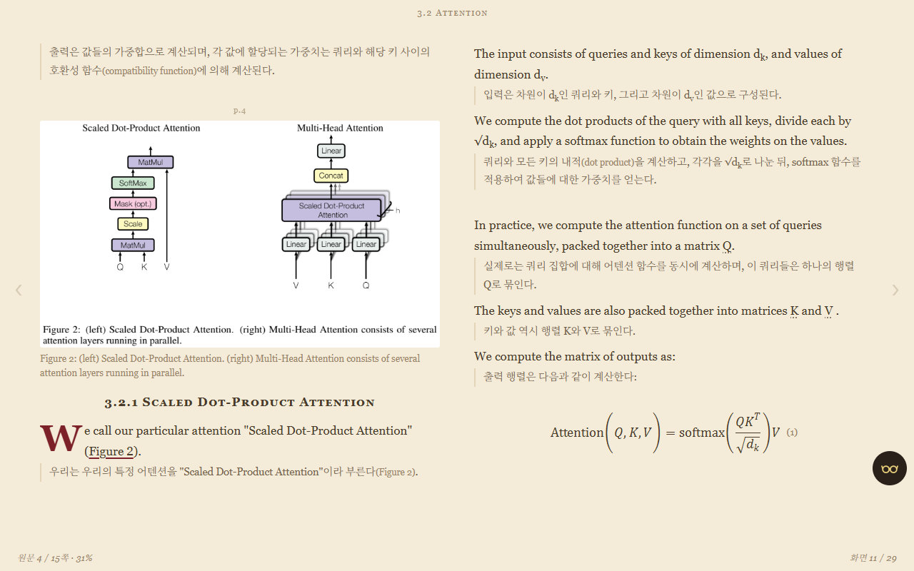

정식 출시 준비 중 · 지금은 무료 베타
정식 출시 준비 중 · 지금은 무료 베타
영어 논문을, 책처럼.
올리면 번역부터 그림 · 수식 풀이까지 미리 준비됩니다.
무료 베타 · 60일 · 논문 2편까지 · 다른 기기
핵심 기능 ↓논문 한 편이, 책 한 권.
분류마다 선반. 읽고 있는 책은 맨 위에, 읽을 목록은 맨 아래에.
번역은, 문장 바로 아래.
원문을 버리지 않습니다. 막힐 때만 눈을 내리면 됩니다.
흩어진 주제를, 한 줄로.
'셀프 어텐션'을 찾으면 나오는 곳을 모두 칠하고, ‹ › 로 오갑니다.
기호는, 눌러서 뜻을.
뜻과 단위, 나오는 곳. 수식은 항마다 풀이합니다.
3.2 ATTENTION
An attention function can be described as mapping a query and a set of key-value pairs to an output.
어텐션 함수는 쿼리와 키-값 쌍들의 집합을 출력으로 대응시키는 것으로 설명할 수 있다.
Multi-head attention allows the model to jointly attend to information from different representation subspaces.
멀티헤드 어텐션은 모델이 서로 다른 표현 부분공간의 정보에 함께 주의를 기울이게 한다.
Attention(Q, K, V) = softmax(QKT / √dk) V(1)
핵심은, 네 가지.
PDF 하나 올리면 전부 미리 준비됩니다.
PDF 하나 올리면, 끝.
읽기 전에, 이만큼을 미리 만들어 둡니다.
- 15쪽쪽마다 번역
- 1쪽쉽게 말하면 인포그래픽
- 6개그림 · 표 풀이
- 4개표를 진짜 표로
- 5개수식 다시 쓰기 · 풀이
- 24개기호 사전
- 2문장짧은 소개
그리고번역은 논문마다 한 번덮으면 읽던 문장에서형광펜 · ★ · 메모단어장책갈피펜 필기
이럴 때, 이렇게.
실제 Cresco 화면입니다.
더 자세히 보기
누르는 곳마다 달라지는 기능낱말 · 기호 · 인용 · 주제로 모아 읽기
다른 번역기에는 없는 것.
한 쪽 안에서, 누르는 곳마다.

- 낱말누르면 뜻 · 단어장에 · 문장 번역
- 끌어 고르기★ 핵심 · 형광펜 · 메모
- 그림 · 표크게 보기 · 다시 그린 풀이
- 수식기호마다 색 · 계산 예
- 점선 기호뜻 · 단위 · 나오는 곳
- 인용 [3]그 논문 한 줄 · ☆ 담기
- 사서이 논문에 묻기
AI 사서근거 쪽 · 손글씨 필기
막히면, 사서에게.
논문 안에서 답을 찾아 근거 쪽을 달고, 요점은 문장 곁에 손글씨로.
[p.6] 근거 쪽 고리✍ 손글씨 필기이 논문에서 · 더 넓게
지금 베타는 메일 로그인만으로 Cresco AI(논문 약 1~2편 · 질문 30개 맛보기)를 씁니다 — 요금제
내 데이터는 어디에 있나요서재 · 번역할 글 · 서버
서재는, 내 기기와 내 계정에만.
번역할 때만 그 글이 Cresco AI 로 갑니다. 로그인하면 기기끼리 맞추려고 서재 사본을 내 계정에 보관합니다.
내 기기
PDF · 번역 · 기록 · 사서 대화 — 파일 하나
모두 여기에Cresco AI
Cresco 서버를 거쳐 Anthropic 의 Claude 로
번역할 글만Cresco 서버
메일 주소 · 쓴 양 · 기기끼리 맞출 서재 사본, 동의하면 익명 사용 횟수
번역할 글은 남기지 않음Cresco AI 로 번역하는 글은 서버를 지나가기만 하고 저장되지 않습니다. 서재 사본은 내 계정으로만 쓰이고, 계정을 지우면 함께 지워집니다.
여러 기기에서 쓰기PC · 휴대폰 · 태블릿
PC와 휴대폰, 같은 서재.
같은 계정으로 로그인하면 논문 · 번역 · 기록이 저절로 맞춰집니다.
정식판은, 이렇게 나옵니다.
정식판 가격이 정해졌습니다. 지금 베타는 무료이고, 출시 날짜는 정해지는 대로 여기에 알립니다.
앱스토어 ·
플레이스토어.
아이폰도 PC 없이 앱 하나로.
설치할 것 없이,
메일 하나로.
로그인하면 번역 · 풀이 · 사서가 바로.
어디서나,
같은 서재.
내 계정으로, 같은 와이파이가 아니어도.
지금 베타에서는 아래 기능이 모두 무료로 켜져 있습니다. 메일 로그인만 하면 Cresco AI(맛보기 분량)를 쓸 수 있고, 논문은 2편까지 올릴 수 있습니다.
| 정식판 요금제 | 무료먼저 써 보기 | 베이직매달 논문을 읽는 분께 | 프로논문을 많이 읽는 분께 |
|---|---|---|---|
| Cresco AI 분량 | |||
| 논문 (번역 · 그림 · 표 · 수식 풀이까지) | 약 1~2편 | 월 약 5편 | 월 약 8편 |
| 사서 질문 | 30회 | 월 300회 | 월 1,000회 |
| Cresco Note 노트 질문 (같은 계정) | 30회 | 월 300회 | 월 1,000회 |
| AI 품질 | 기본 | 기본 | 최고 품질 |
| 읽기 · 기록 | |||
| 서재 · 책으로 읽기 · 문장 아래 번역 보기 | ✓ | ✓ | ✓ |
| 형광펜 · ★ · 메모 · 책갈피 · 펜 필기 | ✓ | ✓ | ✓ |
| 단어장 · 낱말 뜻 | ✓ | ✓ | ✓ |
| 형광펜 PDF · 인용 복사 (APA · BibTeX) | ✓ | ✓ | ✓ |
| 기기 · 동기화 | |||
| Windows · 안드로이드 앱 | ✓ | ✓ | ✓ |
| Mac · 아이폰 · 아이패드 | 추후 공개 예정 | 추후 공개 예정 | 추후 공개 예정 |
| 어디서나 동기화 (내 계정으로 PC ↔ 휴대폰) | — | ✓ | ✓ |
| 동기화 저장 공간 | — | 1GB | 3GB |
| 가격 | 0원 | 12,900원한 달 | 29,900원한 달 |
가격은 부가세 포함이며, 결제는 정식 출시 때부터 받습니다. 지금 베타는 무료입니다. 논문 편수는 논문 길이에 따라 달라지는 어림값입니다.
자주 묻는 질문
정식판은 언제, 얼마에 나오나요?
가격은 무료 · 베이직 월 12,900원 · 프로 월 29,900원(부가세 포함)입니다. 출시 날짜는 정해지는 대로 이 홈페이지에 알립니다. 정식판은 앱스토어 · 플레이스토어와 이 홈페이지에서 내려받을 수 있고, 결제는 출시 때부터 시작합니다. 요금제 보기
베타에서 쓰던 서재는 정식판으로 옮겨지나요?
네, 옮겨지도록 만들고 있습니다. 서재가 파일 하나로 되어 있어, 정식판에서도 그 파일을 그대로 이어서 씁니다.
정말 무료인가요? 제한이 있나요?
베타는 무료입니다. 베타 판마다 나온 날부터 60일 동안 쓸 수 있고, 논문은 2편까지 올릴 수 있습니다(올린 횟수로 세므로 서재에서 빼도 다시 늘지 않습니다). Cresco AI 는 한 사람당 논문 약 2편 분량 · 사서 질문 30개까지 무료입니다. 기한이 지나도 이미 담은 논문은 그대로 읽을 수 있으며, 앱에서 새 판을 받도록 안내합니다.
Claude 나 ChatGPT 구독이 꼭 있어야 하나요?
아니요. Cresco AI 가 들어 있어서 메일 주소로 로그인만 하면 번역 · 풀이 · 사서 질문을 씁니다. 따로 구독하거나 설치할 것이 없습니다(베타는 한 사람당 논문 약 2편 · 질문 30개, Windows · 안드로이드).
내 논문이 다른 곳으로 가나요?
서재는 내 기기에 있습니다. 로그인하면 기기끼리 맞추려고 서재 사본을 내 계정 전용으로 서버에 보관하고, 계정을 지우면 함께 지웁니다. 번역하고 풀이할 때 그 부분의 글만 Cresco 서버를 거쳐 Anthropic 의 Claude 로 가며, 서버는 그 글을 남기지 않습니다. 자세히
어떤 PDF 가 되나요?
학술지 · arXiv 에서 받은, 글자를 고를 수 있는 PDF 면 됩니다. 특히 수식 · 그림 · 표가 많은 공학 논문에 맞춰 다듬었습니다. 종이를 스캔해 글자가 그림으로 된 PDF 는 번역할 수 없습니다.
태블릿 · 휴대폰에서도 되나요?
안드로이드 휴대폰 · 태블릿에서는 PC 없이 앱만으로 됩니다. 로그인하면 번역 · 풀이 · 사서를 바로 쓰고, 같은 계정이면 PC 와 서재를 함께 씁니다.
Mac · 아이폰에서도 쓸 수 있나요?
Mac · 아이폰 · 아이패드 판은 추후 공개 예정입니다. 지금 베타는 Windows 와 안드로이드에서 쓸 수 있습니다.
새 판이 나오면 서재는 어떻게 되나요?
앱을 켤 때 새 버전 알림이 뜨고, 「지금 업데이트」를 누르면 바로 설치됩니다. 서재는 프로그램 밖(문서 폴더)에 있어 논문 · 번역 · 형광펜이 그대로 남습니다.
문제가 생기거나 바라는 기능이 있어요.
앱 서재의 「✉ 의견 보내기」나 의견 · 문제 신고로 알려 주세요. 하나하나 읽습니다.
지금 받아 보세요.
무료 베타 · 60일 · 논문 2편까지. 메일 로그인만으로 바로 번역합니다.